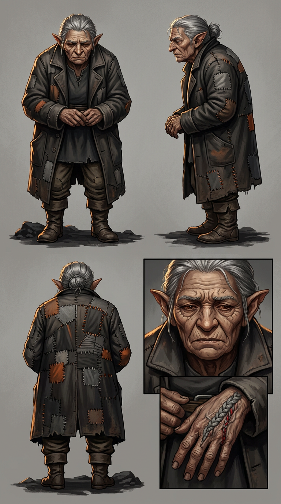

JADI — model sheet
Chapter 008 · first appearance. The drawing reference for every page this character is on — the eight required panels — front · side · back · face · detail · hands · kit · action, in the house panel order, per the character art spec.

🔍 click to zoom
1front2side3back4face5detail (the left palm — grey braid, crimson second strand)6hands (right steady and square against left flattened and marked)7kit (mending cord, notched tally-stick, folding stool, blank sheets tied with cord, hand lamp, dark cloth, candle stub, purse)8action (the cellar-doorway lesson — three seated pupils, knots counted off on her fingers)
Drawing brief
- Silhouette: tall for a basin woman, badly stooped, and — uniquely in this cast — wide in the shoulders from a lifetime of work. She does not read as frail. She reads as used hard and still standing.
- Coat: the chapter's best costume. A good coat from forty years ago, mended by an expert roughly a hundred times. Each mend is visible, deliberate, and the work of somebody extremely skilled. The coat is her résumé. Do not draw it ragged — draw it maintained.
- Left hand: the whole story. A braided grey mark flattened by decades of work, seam opened at the root, skin grown over part of the thread from nine months of patient cutting. From Chapter 008 Page 010 onward it carries a second strand — crimson-under-grey — braided into the first.
- Right hand: steady, competent, a mender's hand that still works. Draw the contrast every time both are on panel.
- Face: deep-lined, Kshudra, unsmiling without being grim. She has resting eyes that watch hands rather than faces — established in her first appearance, where she looks at Ira's palms for a full panel before meeting her eyes.
- Tell: she does not fidget. When she is waiting to hear something she dislikes, she puts both hands flat and stops moving entirely — the same stillness Kessa uses, arrived at independently, which is how the reader knows they are the same kind of person.
Full written sheet, canon rules and card-game line: Jadi